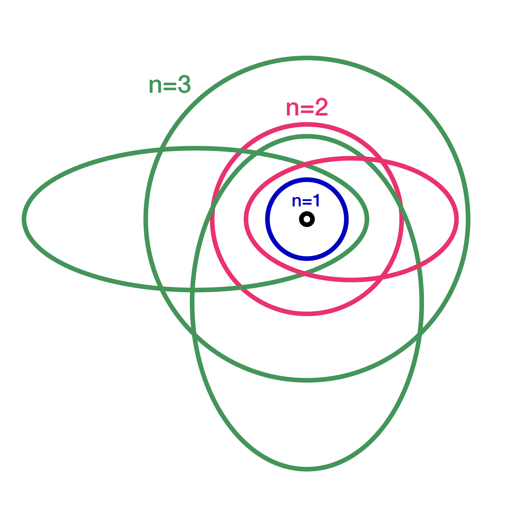
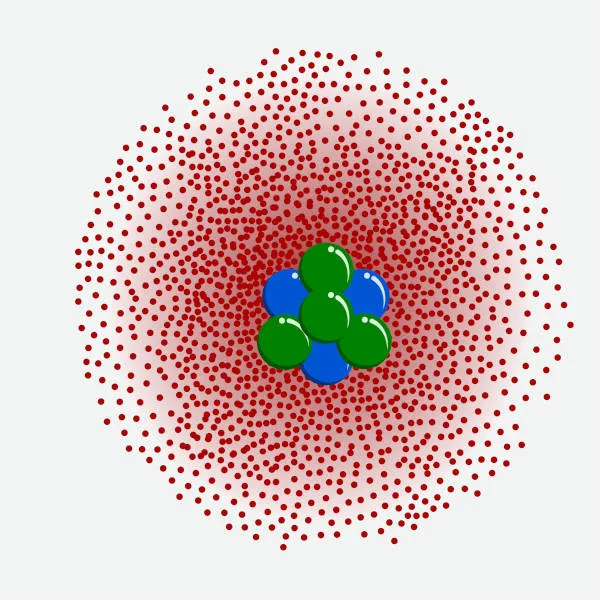

🎯 A evolução do átomo: quando a ciência vai além do visível
Depois do modelo de Bohr, que já era um grande avanço, os cientistas perceberam que ainda faltava algo: explicar por que certos espectros atômicos tinham linhas finas demais para serem vistas a olho nu.
Foi aí que entraram Arnold Sommerfeld e Erwin Schrödinger — dois gigantes da física quântica que levaram o átomo para um novo nível.
🔸 Arnold Sommerfeld (1868–1951): O refinador do modelo de Bohr
Sommerfeld não derrubou o modelo de Bohr — ele o aperfeiçoou. Em 1916, ele propôs uma ideia revolucionária: os elétrons não se movem apenas em órbitas circulares, mas também em órbitas elípticas.
Além disso, ele introduziu um novo número quântico: o número quântico azimutal (ℓ), que descreve a forma da órbita.
Com isso, Sommerfeld conseguiu explicar o fino desdobramento das linhas espectrais — um fenômeno que Bohr não conseguia prever.
Seu modelo foi um passo crucial rumo à mecânica quântica, mostrando que o átomo era muito mais complexo do que parecia.

Curiosidade: Sommerfeld foi professor de sete ganhadores do Prêmio Nobel, incluindo Werner Heisenberg e Wolfgang Pauli. Apesar disso, ele mesmo nunca ganhou o Nobel — um dos maiores paradoxos da história da ciência.
🔸 Erwin Schrödinger (1887–1961): O pai da nuvem eletrônica
Em 1926, Schrödinger lançou uma bomba na física com sua equação de onda — uma fórmula matemática que descreve o comportamento dos elétrons não como partículas em órbita, mas como ondas de probabilidade.
Seu modelo, conhecido como modelo quântico ou modelo da nuvem eletrônica, trouxe uma mudança radical:
- Os elétrons não têm órbitas fixas.
- Eles ocupam regiões chamadas orbitais, onde é mais provável encontrá-los.
- Esses orbitais têm formas diferentes: s (esférico), p (duplo ovo), d e f (mais complexos).
Em vez de dizer "o elétron está aqui", Schrödinger dizia: "há 90% de chance de o elétron estar nesta região".

Curiosidade: Schrödinger é famoso por seu gato hipotético — um experimento mental em que um gato está ao mesmo tempo vivo e morto até ser observado. Esse paradoxo mostra o quão estranha é a mecânica quântica.
💡 Por que esses modelos importam?
Hoje, o modelo de Schrödinger é o mais aceito pela ciência. Ele explica:
- Como os átomos se ligam para formar moléculas.
- Por que os elementos têm propriedades diferentes.
- O funcionamento de lasers, semicondutores e computadores quânticos.
Sommerfeld e Schrödinger não viram átomos diretamente — ninguém viu. Mas, com matemática e genialidade, eles desenharam o invisível.
Isso mostra o poder da ciência: nem tudo precisa ser visto para ser compreendido.
🧠 Frase para refletir
“Se você não ficou chocado com a mecânica quântica, é porque ainda não entendeu ela.”
— Niels Bohr